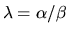
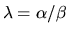
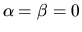
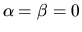

Let A and B be n-by-n matrices.
A scalar  is called
a generalized eigenvalue
and a non-zero column vector x the
corresponding right generalized eigenvector
of the pair (A,B),
if
is called
a generalized eigenvalue
and a non-zero column vector x the
corresponding right generalized eigenvector
of the pair (A,B),
if
 .
A non-zero column vector y satisfying
is called the
left generalized eigenvector
corresponding to
.
A non-zero column vector y satisfying
is called the
left generalized eigenvector
corresponding to  .
(For
simplicity, we will usually omit the word ``generalized'' when no
confusion is likely to arise.) If B is singular, we can have the
infinite eigenvalue
,
by which we mean
Bx = 0. Note that if A is non-singular, then the equivalent
problem
is perfectly well-defined, and the infinite
eigenvalue corresponds to .
The generalized symmetric definite eigenproblem in section 2.3.7
has only finite real eigenvalues. The generalized nonsymmetric
eigenvalue problem can have real, complex or infinite eigenvalues.
To deal with both finite (including zero) and infinite
eigenvalues, the LAPACK routines return two values,
.
(For
simplicity, we will usually omit the word ``generalized'' when no
confusion is likely to arise.) If B is singular, we can have the
infinite eigenvalue
,
by which we mean
Bx = 0. Note that if A is non-singular, then the equivalent
problem
is perfectly well-defined, and the infinite
eigenvalue corresponds to .
The generalized symmetric definite eigenproblem in section 2.3.7
has only finite real eigenvalues. The generalized nonsymmetric
eigenvalue problem can have real, complex or infinite eigenvalues.
To deal with both finite (including zero) and infinite
eigenvalues, the LAPACK routines return two values,  and
and  .
If
.
If  is non-zero then

is an eigenvalue.
If
is non-zero then

is an eigenvalue.
If  is zero then
is an eigenvalue of (A, B).
(Round off may change an exactly zero
is zero then
is an eigenvalue of (A, B).
(Round off may change an exactly zero  to a small nonzero value,
changing the eigenvalue
to some very large value;
see section 4.11 for details.)
A basic task of these
routines is to compute all n pairs
to a small nonzero value,
changing the eigenvalue
to some very large value;
see section 4.11 for details.)
A basic task of these
routines is to compute all n pairs
 and x and/or
y for a given pair of matrices (A,B).
and x and/or
y for a given pair of matrices (A,B).
If the determinant of  is identically
zero for all values of
is identically
zero for all values of  ,
the eigenvalue problem is called singular; otherwise it is regular.
Singularity of (A,B) is signaled by some

(in the presence of roundoff,
,
the eigenvalue problem is called singular; otherwise it is regular.
Singularity of (A,B) is signaled by some

(in the presence of roundoff,  and
and  may be very small). In this case, the eigenvalue problem is very
ill-conditioned, and in fact some of the other nonzero values of
may be very small). In this case, the eigenvalue problem is very
ill-conditioned, and in fact some of the other nonzero values of  and
and  may be indeterminate (see section 4.11.1.4 for further
discussion)
[93,105,29,53].
may be indeterminate (see section 4.11.1.4 for further
discussion)
[93,105,29,53].
Another basic task is to compute the generalized Schur decomposition of the pair (A,B). If A and B are complex, then their generalized Schur decomposition is A = QSZH and B = QTZH, where Q and Z are unitary and S and T are upper triangular. The LAPACK routines normalize T to have real non-negative diagonal entries. Note that in this form, the eigenvalues can be easily computed from the diagonals: (if ) and (if tii = 0), and so the LAPACK routines return and .
The generalized Schur form depends on the order of the eigenvalues on the diagonal of (S,T). This order may optionally be chosen by the user.
If A and B are real, then their generalized Schur decomposition
is A = QSZT and B = QTZT, where Q and Z are orthogonal,
S is quasi-upper triangular with 1-by-1 and 2-by-2 blocks on the
diagonal, and T is upper triangular with non-negative diagonal entries.
The structure of a typical pair of (S,T) is illustrated below for n=6:
The columns of Q and Z are called generalized Schur vectors
and span pairs of deflating subspaces of A and B [94].
Deflating subspaces are a generalization of invariant subspaces: the first k
columns of Z span a right deflating subspace mapped by both A and
B into a left deflating subspace spanned by the first k columns of
Q. This pair of deflating subspaces corresponds to the first k
eigenvalues appearing at the top left corner of S and T as explained
in section 2.3.5.2.
The computations proceed in the following stages:
Other subsidiary tasks may be performed before or after those described.